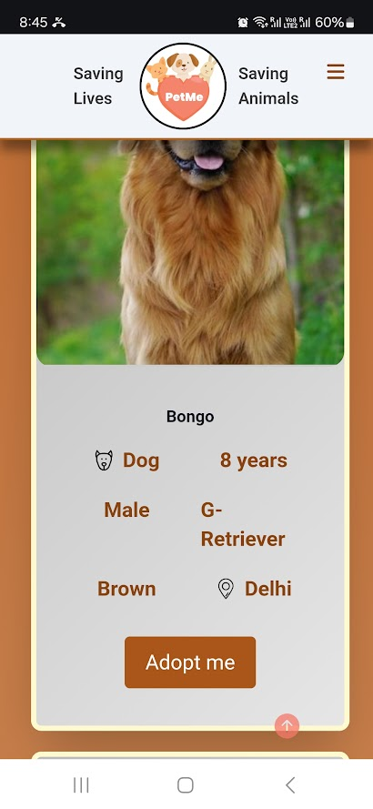

I am okay with the resizing of the post on hover but the text is adjust as well which is uneasy on the eyes
Attach LLM API to auto-generate the pet news as events are occuring around the world. A twitter bot may be run to actively search for #petnews tweets and pick context from the post itself to auto-generate post, or atleast pass on to moderator of website to approve.
[MOBILE] Subscribe to newsletter
and other messages show up
correct in "Light Mode" but not in "Dark Mode"
[MOBILE] Menu page both in home page and some other page looks a lot different in placement
[MOBILE] Form page looks just right in donate page but not so good in the adopt page
[MOBILE] The "Scroll to Top" button seems weirdly positioned and its look/color leaves room for improvement
